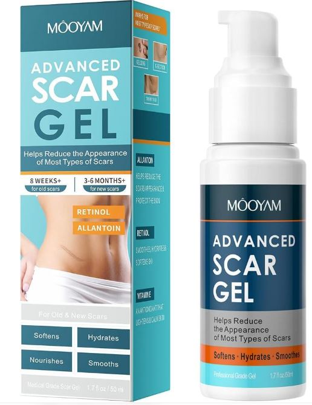

Cuidado direcionado
Produto destinado ao cuidado da aparência de cicatrizes e marcas na pele.
O cuidado que a sua pele merece
Conheça uma solução desenvolvida para ajudar a melhorar a aparência de cicatrizes e marcas na pele.
Fale directamente connosco pelo WhatsApp.

CONHEÇA O PRODUTO
Descubra o MOOYAM Advanced SCAR GEL e consulte as informações do fabricante antes de iniciar a utilização.
O MOOYAM Advanced SCAR GEL é um produto apresentado para o cuidado da aparência de cicatrizes. Consulte a embalagem e as informações oficiais para conhecer a sua composição e características específicas.
É destinado a pessoas interessadas em cuidar da aparência de áreas da pele com cicatrizes ou marcas. A resposta pode variar de pessoa para pessoa.
Siga sempre as instruções, advertências e frequência de aplicação indicadas na embalagem pelo fabricante.
O Mooyam Scar Gel Leva em menos de 4 semanas para cicatrizar. Produto feito na India é Eficaz e Seguro.
PORQUÊ CONHECER
Conheça algumas características de utilização, sem promessas de resultados.
Produto destinado ao cuidado da aparência de cicatrizes e marcas na pele.
Consulte a embalagem para aplicar correctamente, conforme as indicações do fabricante.
Pode ser considerado na sua rotina, respeitando as instruções de utilização.
Cuide da sua pele com informação, consistência e expectativas realistas.
GALERIA
Adicione fotografias próprias e autorizadas. As imagens abaixo são espaços reservados e não representam resultados.
Publique apenas fotografias autênticas, com consentimento explícito das pessoas retratadas. Identifique correctamente imagens de antes e depois e não altere o seu conteúdo de forma enganadora.
EXPERIÊNCIAS DE CLIENTES
Os textos fornecidos estão em estado de aprovação. Publique-os apenas depois de confirmar que são depoimentos autênticos e obter autorização dos clientes.
Texto pendente de aprovação
“Comprei o MOOYAM Advanced SCAR GEL para a minha filha, porque ela teve um corte feio no braço. Fiquei satisfeita com a minha decisão e gostei de conhecer este produto.”
Texto pendente de aprovação
“Comprei o MOOYAM Advanced SCAR GEL para mim e fiquei satisfeito com a experiência. Gostei da facilidade de aplicação. No meu caso, tive que comprar dois e fiquei satisfeito com a minha escolha.”
Texto pendente de aprovação
“Decidi experimentar o MOOYAM Advanced SCAR GEL e gostei muito da minha experiência. É um produto que passou a fazer parte dos meus cuidados com a pele. Fiquei satisfeita com a minha escolha!”
MODO DE UTILIZAÇÃO
As instruções da embalagem do fabricante têm sempre prioridade.
Limpe cuidadosamente a área da pele e seque-a antes da aplicação, se assim for indicado na embalagem.
Aplique o MOOYAM Advanced SCAR GEL conforme a quantidade e o modo indicados pelo fabricante.
Mantenha a utilização apenas conforme a frequência e as recomendações indicadas na embalagem.
MOOYAM ADVANCED SCAR GEL
Fale connosco pelo WhatsApp e saiba como adquirir o MOOYAM Advanced SCAR GEL.